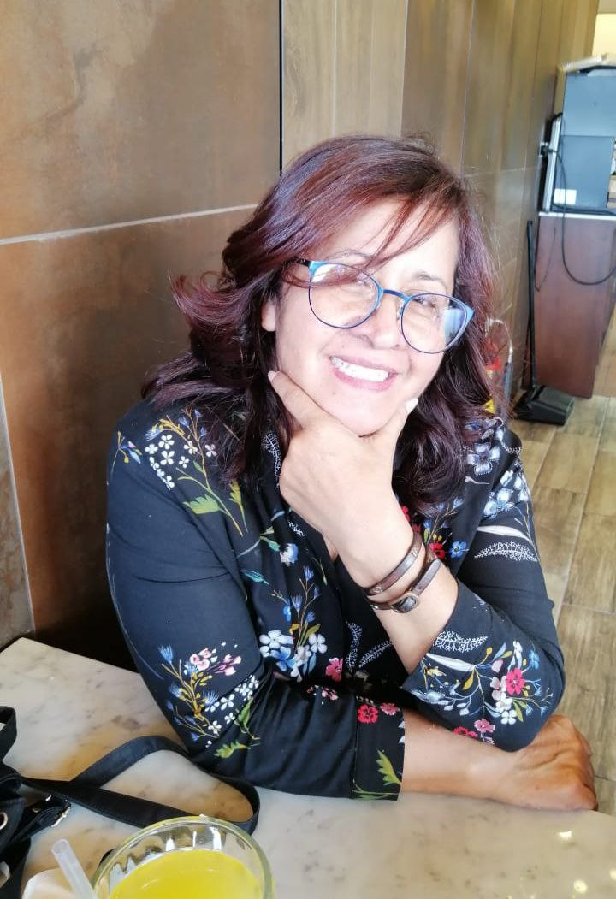
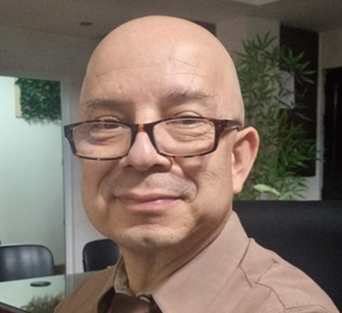
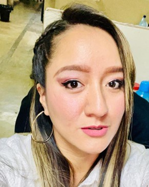
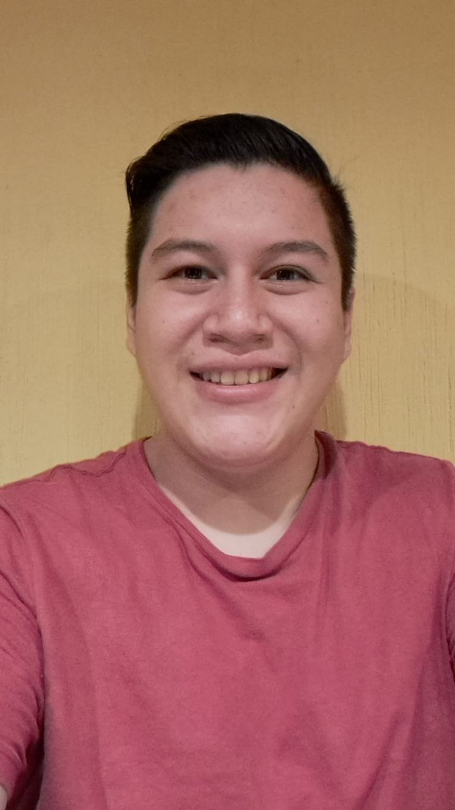
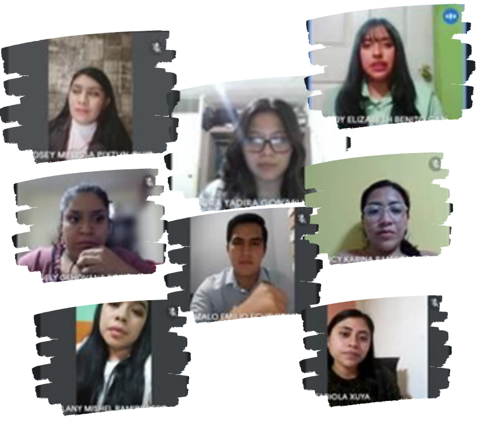
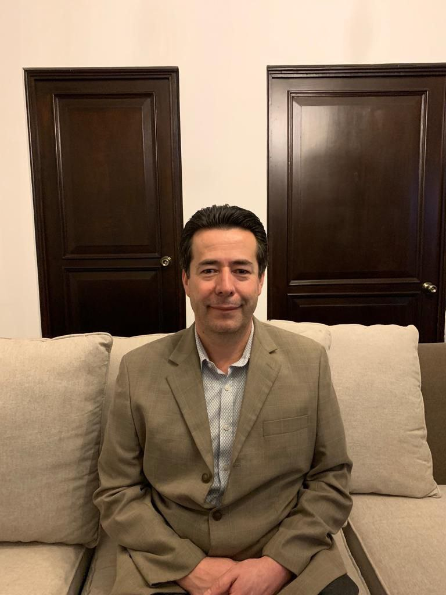

El Reto del estudiante en su formación académica
Entrevista a licenciada Sandra Corado,Coordinación Sede La Florida
Entrevistador Alan Daniel Fuentes Pérez, alumno sexto semestre
Administración de Empresas
Los retos son parte de la vida, y cuanta satisfacción hay al superarlos y avanzar hacia nuevas metas.
El centro universitario Belén zona 19, es coordinado por la licenciada Sandra Corado Bernal desde sus inicios en el año 2020.
La licenciada cuenta con una licenciatura en Educación con especialidad en Administración Educativa. Tecnología Educativa con posgrado en elaboración y evaluación de proyectos, maestría en dirección y Producción de eLearning. Se ha desempeñado en el área docente, además su experiencia en administración y coordinación de áreas académicas, de idiomas, así como técnicas le proporcionan las habilidades necesarias para hacer una excelente gestión.
Los retos están presentes en la vida de los líderes y los motivan a conquistar nuevas cumbres. La Licenciada nos comparte cual es uno de los retos que enfrenta en la coordinación de la sede:
Definitivamente este es un gran reto que da la visión para guiar y construir calidad educativa. La formación de estudiantes integrales es una de las metas que la coordinadora del centro universitario comenta que su dirección impulsa, nos amplia de la siguiente forma:
El alumno determina y es parte activa de su formación, la licenciada comenta:
"Las expectativas con las que se presenta a su clase. Si la expectativa es de aprender, luego se conecta o se presenta a clases preparado con cuaderno de notas y especialmente en cuerpo, alma y espíritu, no solo se asegura que su nombre aparezca al momento de tomar la asistencia. El alumno que tiene la expectativa de aprender, de un mundo mejor para él y su familia en potencia (sino se ha casado) no se limita a lo que el docente fielmente le comparte en el área de contenidos, sino que investiga, lee y lee y sigue leyendo".
Existen momentos de dificultad, pero, el líder siempre tiene un ancla de que aferrarse. La coordinadora nos menciona cuál es su motivación para para avanzar en tiempos difíciles:
“La seguridad que Dios siempre está conmigo, que Él está conmigo, que Él pelea por mí, que él me ha dicho “que toda obra para bien”. Oro que su favor me rodee como un escudo siempre”.
Al finalizar la entrevista, la coordinadora del centro universitario deja un mensaje y hace una invitación a aceptar el reto:
"No lo piense más «En un mundo donde existe el tiempo, nada puede volver atrás». Este dicho es verdad. Sin embargo, creo en las segundas oportunidades nunca es tarde para comenzar".

Licda Corado
UMG y colegio Belén, una alianza estratégica
Entrevista a Lic. Mancilla, director Colegio Mixto Belén Entrevista por Josué David Ajmac
Alumno del sexto semestre
En Enero del 2020 la historia del centro universitario La Florida da inicio en el colegio Mixto Belén.
A partir de esa fecha la colaboración, el entusiasmo y la pasión por la educación han permitido el éxito del Centro Universitario. Se entrevisto al director del colegio Belén para conocer cuales fueron sus inicios. El licenciado Mancilla nos comenta que el colegio nace por iniciativa de 3 insignes maestras: Consuelo Rivera Orellana, Martha Rivera Orellana de Mancilla y Quirina Orellana Álvarez. Las 3 docentes surgidas de los procesos de profesionalización impulsados por el gobierno del Dr. Juan José Arévalo. En simultáneo se lotifica la Colonia la Florida y con mucho esfuerzo enganchan dos lotes sobre los cuales funcionaria la casa de estudios. Siendo Consuelo Rivera Orellana quien establece el colegio. Las otras dos fundadoras se integran una en 1985 luego de ser directora durante muchos años en la escuela de Sacsuy, municipio de San Juan Sacatepéquez y la profa Martha Rivera Orellana en 1988.
Sin lugar a duda el inicio del Colegio Mixto Belén fue marcado por el amor, dedicación y humanismo de sus tres fundadoras quienes encontraron un gran pilar en Joaquín Mancilla Muralles como cuarto componente de este gran proyecto educativo. Ya han pasado 64 años desde que inicio el sueño de los fundadores y este recorrido ha sido acompañado de múltiples logros.
“RESULTA UN POCO
COMPLICADO PODER PLASMAR EN UNAS LÍNEAS LOS LOGROS
DE NUESTRO ESTABLECIMIENTO Y MUESTRA DE ELLO SON LOS
MÁS DE 650 TROFEOS, PLAQUETAS Y
RECONOCIMIENTOS Y 350
DIPLOMAS QUE SE MUESTRAN EN LA ENTRADA PRINCIPAL DEL ESTABLECIMIENTO”.
El licenciado Mancilla, egresado de UMG, recuerda que siempre fue un sueño que el colegio se convirtiera en sede de la Universidad.
“El colegio y la universidad comparten la visión educativa fundamentada sobre el conocimiento y las virtudes de verdad y libertad. El Colegio Mixto Belén se esfuerza cada día por armonizar el amor, la enseñanza, el respeto y la ética, componentes valiosos de nuestro ideario. Existe armonía entre la forma de trabajo de UMG y nuestra casa de estudios por cuanto compartimos el afán de hacer llegar la sabiduría y la enseñanza a más personas”.
El centro educativo Mixto Belén pone a disposición de los estudiantes una amplia y sólida infraestructura, espacios especialmente diseñados para el funcionamiento de la vida estudiantil, salones de clases, espacios deportivos, cafetería, salones audiovisuales, salones multifuncionales.
Localización estratégica de las instalaciones con fácil y rápida ubicación, cámaras de circuito cerrado de Tv, seguridad perimetral y amplio parqueo. Y por supuesto las oficinas de la sede UMG están abiertas para recibir a los interesados.
El líder del colegio Mixto Belén menciona que como institución se sienten orgullosos de contar con la Universidad Mariano Gálvez como un aliado y amigo.
Para finalizar la entrevista se le solicito al licenciado Mancilla que diera un mensaje a los graduandos de este año:
“EL TIEMPO Y LA EXPERIENCIA HAN DEMOSTRADO QUE INVERTIR EN EDUCACIÓN PROPORCIONA RÉDITOS A LARGO PLAZO, POR ELLO DARLE CONTINUIDAD A LA FORMACIÓN ACADÉMICA A NIVEL SUPERIOR ES PENSAR A FUTURO Y CONCRETAR UNA VISIÓN DE SERVICIO Y DE VIDA CON ATRIBUTOS HUMANOS. SABEMOS QUE ELLO IMPLICA DESAFÍOS PERSONALES Y ECONÓMICOS, SIN EMBARGO, TODO EN LA VIDA REQUIERE ESFUERZO.
UNA BUENA ACTITUD HACIA EL ESTUDIO PARA FAVORECER EL EGRESO EXITOSO Y LA INCORPORACIÓN A ESTRATOS ECONÓMICOS Y PROFESIONALES SIGNIFICATIVOS DENTRO DE LA DINÁMICA SOCIAL”.

Licdo Mancilla
Estudios Universitarios y un futuro éxitoso
Entrevista a Ingeniera Valeria Castellanos,Coordinación carrera Ingenieria en Sistemas
La ingeniera Valeria Castellanos coordinadora de la carrera de ingeniería en la sede Belén, zona 19 es egresada de la Universidad Mariano Gálvez, nos comenta que su labor está impulsada por el compromiso con la universidad y los estudiantes.
“Se atienden llamadas y mensajes todos los días de lunes a domingo motivando y resolviendo dudas de los chicos que desean con todo el corazón culminar su carrera universitaria, y así poder superarse”
“Transmitimos a nuestros estudiantes todos los lineamientos, ventajas y oportunidades que obtendrán con el título de Ingenieros en Sistemas ya que es una carrera que cubre la mayoría de las necesidades tecnológicas, informáticas e innovadoras para las empresas guatemaltecas”.
La motivación es vital para todo estudiante universitario, conocer las ventajas de estudiar una carrera universitaria impulsa el deseo de culminar los estudios.
“El tiempo siempre pasa y muy rápido, que mejor que pase estando inscritos en una carrera universitaria, es un sacrificio, pero vale la pena al final. Siempre he dicho que, sí es necesaria la inteligencia para estudiar en cualquier facultad, pero sobre todo se necesita entrega, compromiso y constancia, estas cualidades abren las puertas al éxito”.

Ingeniera Valeria
El sueño de ser administrador
Entrevista a Marvin Obed, estudiante de sexto semestre de Administración de Empresas
Entrevista realizada por Monica Jaqueline
Alumna del sexto semestre de Administración de Empresas
Formar una carrera exitosa no depende solamente de la carrera que se estudie, sino de los conocimientos que se adquiere en la universidad y cómo se logre aplicar en el ámbito laboral.
El caso de Marvin Obed Roldán Meléndez, estudiante de Administración de Empresas quien actualmente desempeña el puesto de Auxiliar Contable, relata que decidió estudiar administración con la visión de adquirir los conocimientos necesarios para próximamente emprender un negocio.
Adicional se visualiza escalando posiciones dentro del ámbito laboral obteniendo un puesto como auxiliar administrativo para adquirir más experiencia, en un lapso de 5 años tiene como objetivo obtener una gerencia en una empresa importante.
El estudiante comenta que tiene un interesante proyecto a futuro, se prepara planeando y formando un capital para crear una empresa de servicio. Su visión es crear un lugar donde las personas puedan pasar un momento agradable antes, durante y después de su trabajo, como buen administrador planea tener más de una fuente de ingresos, por lo que en sus sueños también está el servicio de transporte no existe límite para el profesional que cuenta con sueños que lo impulsan.

Marvin Obed
Congreso Interfacultades
Por Angela Geovana Prados Burns y Lindsey Melissa Pixtún.
Estudiantes de sexto ciclo de Administración de Empresas
Formar una carrera exitosa no depende solamente de la carrera que se estudie, sino de los conocimientos que se adquiere en la universidad y cómo se logre aplicar en el ámbito laboral.
El caso de Marvin Obed Roldán Meléndez, estudiante de Administración de Empresas quien actualmente desempeña el puesto de Auxiliar Contable, relata que decidió estudiar administración con la visión de adquirir los conocimientos necesarios para próximamente emprender un negocio.
Adicional se visualiza escalando posiciones dentro del ámbito laboral obteniendo un puesto como auxiliar administrativo para adquirir más experiencia, en un lapso de 5 años tiene como objetivo obtener una gerencia en una empresa importante.
El estudiante comenta que tiene un interesante proyecto a futuro, se prepara planeando y formando un capital para crear una empresa de servicio. Su visión es crear un lugar donde las personas puedan pasar un momento agradable antes, durante y después de su trabajo, como buen administrador planea tener más de una fuente de ingresos, por lo que en sus sueños también está el servicio de transporte no existe límite para el profesional que cuenta con sueños que lo impulsan.

Congreso Interfacultades
Los frutos de estudiar Administración de Empresas
Hector Meléndez
Un administrador de empresas desarrolla varias capacidades y conocimientos a lo largo de su vida que con la práctica se potencializan, la creatividad, el liderazgo, habilidades como el trabajo en equipo y la adaptación a los cambios son vitales para un profesional de la administración. Es por ello, que en esta ocasión entrevistamos al Licenciado Meléndez que cuenta con una amplia trayectoria y experiencia en el sector empresarial.
El licenciado Meléndez es licenciado en Administración de Empresas, graduado de la Universidad Mariano Gálvez, además cuenta con una maestría en administración de negocios con mención en marketing de la universidad Mariano Gálvez. El profesional nos comenta que fue lo que lo motivo a convertirse en un administrador de empresas:
“Desde los 18 años me he dedicado a las ventas, siempre me gustó el área comercial, con la experiencia que obtuve en mi trabajo logré emprender un negocio, fue acá donde me di cuenta de que era lo que debía estudiar”.
Nuestro entrevistado menciona que al inicio de la carrera encontró gran similitud de los contenidos de los cursos con la forma en la que el realizaba actividades en su empresa.
“Le encontré sentido a todo, venía ejerciendo la Administración de forma empírica, cuando inicié la carrera me di cuenta de que, buena parte ya la ejercía, solo que todo tiene un nombre.
Por ejemplo, yo llevaba la administración de mi negocio, contrataba personal, revisaba la contabilidad con el contador, hacía labor de Marketing y ventas”.
El licenciado menciona que la carrera de Administración de empresas es muy completa, y da al profesional un plus, ya sea para emprender o para laborar para una organización. El administrador necesita conocer sobre varias dinámicas del negocio. “En el año 2009 fui contratado para un proyecto en Guatemala, mi puesto fue el de Gerente Comercial, por falta de personal desarrollé también labores como R.R.H.H, ventas, apertura de puntos de venta, entre otras”.
“Inicie administrando el negocio con 15 personas y llegue a tener casi 800 personas a mi cargo. Fue una bonita experiencia, aprendí mucho, los socios de la empresa me permitieron desarrollar el negocio y este tuvo mucho éxito, hoy en día es la empresa líder en Guatemala en su ramo, laboré para esta empresa nueve años”.
Se le solicito al catedrático que compartiera un consejo para los jóvenes que desean estudiar administración de empresas:
“Mi consejo es que se esfuercen y luchen por sus sueños, todos tenemos oportunidades en la vida, es de aprovecharlas cuando lleguen; los límites solo nosotros los ponemos en nuestra mente.
Hay que prepararnos académicamente, aprovechar el tiempo, todo nos servirá un día, no desperdiciar el tiempo en cosas que no generan, aprovechen cada día en algo que les pueda servir, estudiar inglés, ser experto en Office, esto ayuda a conseguir un mejor empleo, y por ende un mejor salario”.

Licenciado Hector Meléndez